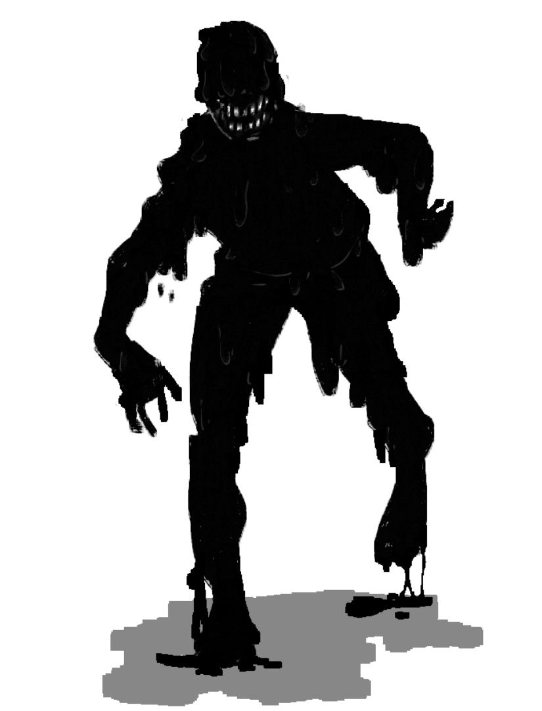
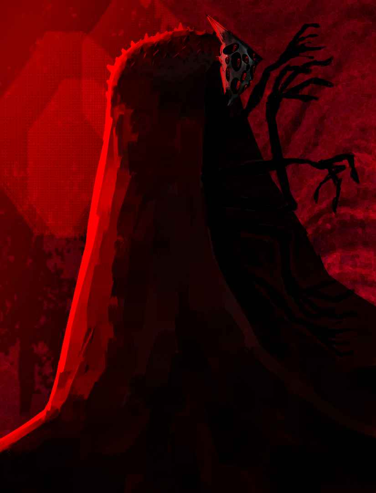

Introdução
Este bestiário foi elaborado para registrar e consolidar informações sobre criaturas associadas ao universo de Wuitalur. Seu conteúdo abrange entidades que já apareceram em campanhas, aquelas que podem vir a surgir em futuras narrativas e até mesmo criaturas que talvez nunca aparecem em campanhas oficiais.
Além de servir como documentação oficial, o bestiário funciona como material de apoio para narradores que desejam conduzir campanhas ou sessões com foco em criaturas específicas do cenário. As informações apresentadas buscam manter coerência temática e oferecer recursos práticos para aplicação em mesa.
O documento também serve para ampliar e fortalecer o desenvolvimento do universo de Wuitalur. Ao aprofundar características, comportamentos, origens e implicações narrativas das criaturas, este bestiário contribui para a expansão contínua do cenário e de suas possibilidades narrativas.
Elementos
As criaturas do bestiário estão organizadas por elementos. Use as abas abaixo para navegar entre os elementos e ver as criaturas de cada um.
Ficha Exemplo (Estrutura Técnica)
Abaixo está um modelo de ficha técnica para criaturas do bestiário de Wuitalur.
(NOME DA CRIATURA)
(Elemento Principal / Tipo)(Elemento Secundário)
Atributos
Des: (valor)
Int: (valor)
RE: (valor)
RF: (valor)
SA: (valor)
Sen: (valor)
FM: (valor)
FR: (valor)
COS: (valor)
Pontos de Vida e Defesas
Pontos de Vida (PV): (valor)
DEF (Defesa Física): (valor)
DEFe (Defesa Elementar): (valor)
Resistências e Fraquezas
Resistências: (lista de resistências)
Fraquezas: (lista de fraquezas)
Movimento
(Valor de movimento, ex: 9m / 6q)
Comportamento em Combate
(Como a criatura luta, pensa, prioriza alvos, quando foge, etc.)
Ações
Ação Padrão
Nome do Ataque (Tipo)
Alcance: (Curto/Médio/Longo/etc.)
Dano: (Ex: 3d10+5 mental)
Efeito Especial: (descrição)
Falha: (descrição)
Ação Completa
Nome da Habilidade (Tipo)
Alcance: (descrição)
Dano: (descrição)
Efeito Especial: (descrição)
Habilidades Passivas / Ativas
(Nome Habilidade 1): (Descrição da habilidade)
(Nome Habilidade 2): (Descrição da habilidade)
Descrição
(Lore, aparência, origem, história, rumores, sensação ao encontrá-la, etc.)
Cenário
(Locais onde costuma aparecer, tipos de missões, atmosferas narrativas, uso em campanha, perigos ambientais, variações da criatura, etc.)
Criaturas
Lista de criaturas do bestiário. As fichas completas ficam abaixo — use os filtros por elemento acima para localizar rapidamente.
Criaturas de Podridão
Zumbi Pútrido
Elemento: Podridão — Tipo: Morto-Vivo / Subcategoria: Nenhum — NDD: 4
Cadáveres reanimados pela gosma viva da Podridão. Suas carnes pingam lodo negro, e seus olhos vazios refletem apenas o instinto de espalhar a infecção. Cada passo deixa um rastro de sangue dissolvido, e o ar ao redor cheira a carne podre e ferro oxidado.
Zumbi Pútrido
Podridão / Morto-VivoAtributos
Des: 4
Int: 2
RE: 5
RF: 6
SA: 3
Sen: 2
FM: 5
FR: 5
COS: 6
Pontos de Vida e Defesas
Pontos de Vida (PV): 50
DEF (Defesa Física): 9
DEFe (Defesa Elementar): 14
Resistências e Fraquezas
Resistências: Podridão, Veneno, Físico leve
Fraquezas: Solar, Fogo
Movimento
6B
Comportamento em Combate
Move-se de forma lenta e irregular, guiado pelo instinto de espalhar a infecção. Prioriza alvos feridos ou isolados e não cede até ser destruído ou queimado.
Ações
Garras Enlameadas
Tipo: Corpo a corpo (Físico / Podridão)
Alcance: Curto
Dano: 2d8 + FM (Podridão)
Efeito Especial: Se causar dano, o alvo faz RE (CT 15) ou fica Amalgamado. Em caso de falha do zumbi no ataque, cria uma área escorregadia de 2B x 1B à frente (DES CT 12 para não cair). Seca após 2 turnos.
Vômito Pestilento (Ação Completa)
Alcance: Cone de 3B à frente
Dano: 2d10 + 3 (Podridão)
Efeito Especial: Alvos que falharem em RE (CT 13) ficam Amalgamados. Em falha do zumbi, sofre 1d6 de dano.
Habilidades Especiais
Carne Infecta: Sempre que sofre dano físico corpo a corpo, o atacante faz RE (CT 12) ou fica Amalgamado.
Miasma de Decomposição: Criaturas até 2B do zumbi têm desvantagem em testes de Cura e Suporte.
Carniceiro da Agonia
Elemento: Podridão — Tipo: Criatura / Subcategoria: Pesadelo
O Carniceiro da Agonia é uma figura monstruosa e brutal, com mais de 3 metros de altura. Ele veste um manto negro com tons de vermelho, marcado por pequenos espinhos em suas extremidades, como se fosse uma extensão de sua carne. Dele saem inúmeros braços deformados, cada um com garras ou lâminas improvisadas acopladas a eles. Sua máscara branca, marcada por olhos vermelhos brilhantes, é um símbolo de terror absoluto.
Não há método ou malícia em suas ações. Quando ataca, o Carniceiro age com uma brutalidade instintiva, destroçando suas vítimas antes que possam sequer gritar ou entender o que está acontecendo. Ele mata por prazer e deixa rastros de destruição que revelam sua presença em um local.
Relatos de sua existência são descritos como rumores: formas distantes em florestas ou cavernas escuras. No entanto, nunca há sobreviventes para contar detalhes precisos. Aqueles que o veem nunca saem vivos, deixando apenas histórias e marcas de carnificina por onde ele passa.
Carniceiro da Agonia
Podridão / Criatura (Pesadelo)Atributos
Des: 4
Int: 6
RE: 7
RF: 5
SA: 5
Sen: 8
FM: 1
FR: 8
COS: 90%
Pontos de Vida e Defesas
Pontos de Vida (PV): 7120
DEF (Defesa Física): 239
DEFe (Defesa Elementar): 313
Resistências e Fraquezas
Resistências: Físico
Fraquezas: Solar
Movimento
9B - Locais abertos troca para 15B
Comportamento em Combate
Atua com brutalidade instintiva: caça, persegue e dilacera suas presas, preferindo emboscadas e áreas onde pode tirar vantagem do terreno.
Ações
Padrão — Garras
Tipo: Corpo a corpo
Ataques: 2 ataques por turno
Dano: 3d15 + 2 + FR de dano físico por ataque
Efeito: Chance de aplicar Sangramento Leve [Escala somente até o médio] (1d20 + RF do alvo | CD: 18)
Especial — Arremesso de Braços
Descrição: Projeta dois de seus braços para atacar um alvo à distância (alcance de até 4 Blocos).
Dano: 2d6 + 2 + FR
Efeito: Chance de aplicar Sangramento Leve [Escala somente até o médio] (1d20 + RF do alvo | CD: 18)
Tentáculo da Carnificina
Descrição: O Carniceiro lança dois tentáculos espinhosos para agarrar um alvo e arrastá-lo em sua direção.
Alcance: 12B
Teste: FR do Carniceiro vs RF do alvo (CD 20)
Efeito: Se acertar, o alvo fica Agarrado e começa a ser puxado em direção ao Carniceiro. Enquanto estiver Agarrado: –1 DES e suas esquivas ganham desvantagem. A cada turno do Carniceiro, o alvo é puxado mais 2B.
Execução: Se o alvo for puxado até 1 Bloco de distância do Carniceiro enquanto ainda estiver agarrado por este tentáculo, ele é EXECUTADO instantaneamente.
Execução de oportunidade: Qualquer alvo até 1 Bloco de distância do Carniceiro é agarrado instantaneamente, ele é EXECUTADO instantaneamente.
Como se soltar: O alvo pode usar ação padrão para tentar escapar do tentáculo (RF ou INT | CD 18). Aliados podem cortar o tentáculo (PV 20).
Reação: Carniceiro pode realizar um agarrão como reação. [4B]
Habilidades Especiais
Medo Instintivo: A presença do Carniceiro é tão avassaladora que presas próximas devem realizar um teste de resistência mental (INT: CD 15) ao entrar em sua área (9 Blocos) ou ficar Aterrorizadas até o fim do combate, reduzindo sua capacidade de reação em -1 de DES.
Regeneração Carnicenta: Recupera 1d10 pontos de vida ao final de cada turno se estiver em combate e se, em seu turno passado, tiver causado dano corpo a corpo a um alvo.
Olhar Onipresente: Sua máscara com inúmeros olhos permite que ele detecte alvos escondidos ou invisíveis em um raio de 7 Blocos, anulando furtividade.
Passivas / Outras Habilidades
Carniceiro Voraz: Em combate, o Carniceiro se adapta ao ambiente para caçar suas presas. Em áreas densas como florestas, ele recebe +1 em acerto.
Ilusões: O Carniceiro consegue criar ilusões de passos e sons ao redor do cenário, sem origem necessária.
Manto das Lâminas: Seu manto avermelhado e preto, coberto por pequenos espinhos, proporciona proteção natural. Quando receber ataques corpo a corpo, o carniceiro causa 1d8 de dano cortante ao seu atacante..
Cenário
A presença do Carniceiro da Agonia distorce o ambiente de maneiras aterrorizantes. O ar parece mais denso e pesado, dificultando a respiração e criando uma sensação constante de opressão. Sons perturbadores ecoam sem origem aparente: ferro rangendo, algo pesado sendo arrastado, carne sendo dilacerada. As paredes e superfícies ao redor são marcadas por cortes profundos e irregulares que surgem repentinamente, como uma manifestação paranormal, visíveis apenas sob luz UV.
A temperatura do local despenca, trazendo um frio cortante que faz a pele arrepiar e as extremidades do corpo começarem a formigar. Luzes piscam ou se apagam completamente, mergulhando o ambiente em escuridão intermitente. O chão vibra levemente, acompanhado por um som grave e distante, como batidas rítmicas que aumentam a tensão.
O cheiro é avassalador — podridão, sangue coagulado e algo ácido, queima como se estivesse corroendo o ar. Plantas murcham e apodrecem rapidamente, enquanto objetos frágeis, como vidro ou madeira, começam a rachar por conta própria. Em meio a tudo isso, a sensação de estar sendo observado é quase insuportável, como se dezenas de olhos invisíveis seguissem cada movimento. O Carniceiro está próximo.